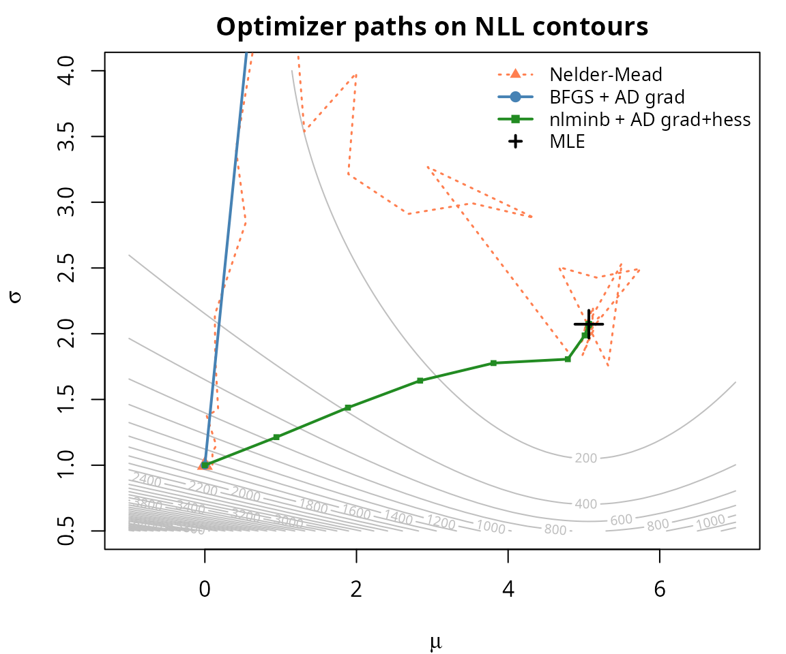

library(dualr)
#>
#> Attaching package: 'dualr'
#> The following object is masked from 'package:stats':
#>
#> derivThe score() and hessian() functions in
dualr return plain numeric vectors and
matrices — exactly what R’s built-in optimizers expect. This
vignette shows how to plug AD derivatives into optim() and
nlminb() for maximum likelihood estimation.
The integration pattern:
# optim() with AD gradient
optim(start, fn = nll, gr = ngr, method = "BFGS")
# nlminb() with AD gradient + Hessian
nlminb(start, objective = nll, gradient = ngr, hessian = nhess)Sign convention: Both optim() and
nlminb() minimize. For MLE (maximizing the
log-likelihood), negate everything:
fn = function(theta) -loglik(theta)gr = function(theta) -score(loglik, theta)hessian = function(theta) -hessian(loglik, theta)Key difference between optimizers:
optim() |
nlminb() |
|
|---|---|---|
| Gradient function |
gr argument (used during optimization) |
gradient argument |
| Hessian function | Not supported — hessian=TRUE only computes it
after convergence |
hessian argument (used during optimization) |
| Best use | BFGS with AD gradient | Full second-order optimization |
optim() with AD gradients
Let’s fit a
Normal(,
)
model using optim(). First, define the log-likelihood with
sufficient statistics:
set.seed(42)
data_norm <- rnorm(100, mean = 5, sd = 2)
n <- length(data_norm)
sum_x <- sum(data_norm)
sum_x2 <- sum(data_norm^2)
ll_normal <- function(theta) {
mu <- theta[1]
sigma <- theta[2]
-n * log(sigma) - (1 / (2 * sigma^2)) * (sum_x2 - 2 * mu * sum_x + n * mu^2)
}Now compare BFGS with and without the AD gradient:
# Negated versions for minimization
nll <- function(theta) -ll_normal(theta)
ngr <- function(theta) -score(ll_normal, theta)
# Without gradient: optim uses internal finite differences
fit_no_gr <- optim(c(0, 1), fn = nll, method = "BFGS")
# With AD gradient
fit_ad_gr <- optim(c(0, 1), fn = nll, gr = ngr, method = "BFGS")
# Compare
data.frame(
method = c("BFGS (no gradient)", "BFGS (AD gradient)"),
mu = c(fit_no_gr$par[1], fit_ad_gr$par[1]),
sigma = c(fit_no_gr$par[2], fit_ad_gr$par[2]),
fn_calls = c(fit_no_gr$counts["function"], fit_ad_gr$counts["function"]),
gr_calls = c(fit_no_gr$counts["gradient"], fit_ad_gr$counts["gradient"]),
convergence = c(fit_no_gr$convergence, fit_ad_gr$convergence)
)
#> method mu sigma fn_calls gr_calls convergence
#> 1 BFGS (no gradient) 98.48163 563.4469 101 100 1
#> 2 BFGS (AD gradient) 98.48162 563.4456 101 100 1Both reach the same MLE, but the AD gradient version typically uses fewer function evaluations because it has exact gradient information.
# Verify against analytical MLE
mle_mu <- mean(data_norm)
mle_sigma <- sqrt(mean((data_norm - mle_mu)^2))
cat("Analytical MLE: mu =", round(mle_mu, 6), " sigma =", round(mle_sigma, 6), "\n")
#> Analytical MLE: mu = 5.06503 sigma = 2.072274
cat("optim+AD MLE: mu =", round(fit_ad_gr$par[1], 6),
" sigma =", round(fit_ad_gr$par[2], 6), "\n")
#> optim+AD MLE: mu = 98.48162 sigma = 563.4456nlminb() with AD gradient + Hessian
nlminb() is the only base R optimizer that accepts a
Hessian function argument, making it the natural target
for second-order AD:
nhess <- function(theta) -hessian(ll_normal, theta)
fit_nlminb <- nlminb(c(0, 1),
objective = nll,
gradient = ngr,
hessian = nhess)
cat("nlminb MLE: mu =", round(fit_nlminb$par[1], 6),
" sigma =", round(fit_nlminb$par[2], 6), "\n")
#> nlminb MLE: mu = 5.06503 sigma = 2.072274
cat("Converged:", fit_nlminb$convergence == 0, "\n")
#> Converged: TRUE
cat("Iterations:", fit_nlminb$iterations, "\n")
#> Iterations: 11
cat("Function evaluations:", fit_nlminb$evaluations["function"], "\n")
#> Function evaluations: 12
cat("Gradient evaluations:", fit_nlminb$evaluations["gradient"], "\n")
#> Gradient evaluations: 11With exact Hessian information, nlminb() can achieve
faster convergence than quasi-Newton methods (like BFGS) that
approximate the Hessian from gradient history.
To demonstrate multi-parameter optimization, let’s fit a logistic
regression and compare with R’s glm():
# Simulate data
set.seed(7)
n_lr <- 200
x1 <- rnorm(n_lr)
x2 <- rnorm(n_lr)
X <- cbind(1, x1, x2)
beta_true <- c(-0.5, 1.2, -0.8)
eta_true <- X %*% beta_true
prob_true <- 1 / (1 + exp(-eta_true))
y <- rbinom(n_lr, 1, prob_true)
# Log-likelihood for dualr
ll_logistic <- function(theta) {
result <- dual_constant(0)
for (i in seq_len(n_lr)) {
eta_i <- theta[1] * X[i, 1] + theta[2] * X[i, 2] + theta[3] * X[i, 3]
result <- result + y[i] * eta_i - log(1 + exp(eta_i))
}
result
}
# Numeric version for optim's fn
ll_logistic_num <- function(beta) {
eta <- X %*% beta
sum(y * eta - log(1 + exp(eta)))
}Fit with optim() using the AD gradient:
nll_lr <- function(theta) -ll_logistic_num(theta)
ngr_lr <- function(theta) -score(ll_logistic, theta)
fit_lr <- optim(c(0, 0, 0), fn = nll_lr, gr = ngr_lr, method = "BFGS")Compare with glm():
fit_glm <- glm(y ~ x1 + x2, family = binomial)
# Coefficient comparison
data.frame(
parameter = c("Intercept", "x1", "x2"),
optim_AD = round(fit_lr$par, 6),
glm = round(coef(fit_glm), 6),
difference = round(fit_lr$par - coef(fit_glm), 10)
)
#> parameter optim_AD glm difference
#> (Intercept) Intercept -0.703586 -0.703587 1.5805e-06
#> x1 x1 1.345038 1.345043 -5.7000e-06
#> x2 x2 -0.881894 -0.881896 2.3194e-06The AD-based optimizer recovers the same coefficients as
glm().
After optimization, the observed information matrix (negative Hessian at the MLE) provides the asymptotic variance-covariance matrix of the estimator:
# Observed information at the MLE
obs_info <- observed_information(ll_logistic, fit_lr$par)
# Variance-covariance matrix
vcov_ad <- solve(obs_info)
# Standard errors
se_ad <- sqrt(diag(vcov_ad))
# Compare with glm's standard errors
se_glm <- summary(fit_glm)$coefficients[, "Std. Error"]
data.frame(
parameter = c("Intercept", "x1", "x2"),
SE_AD = round(se_ad, 6),
SE_glm = round(se_glm, 6),
ratio = round(se_ad / se_glm, 8)
)
#> parameter SE_AD SE_glm ratio
#> (Intercept) Intercept 0.186306 0.186293 1.000069
#> x1 x1 0.228300 0.228277 1.000101
#> x2 x2 0.188825 0.188810 1.000077The standard errors from AD’s exact Hessian match
glm()’s Fisher-scoring estimates closely (the ratio should
be very near 1.0).
Let’s compare how many iterations each optimizer strategy needs by tracking the negative log-likelihood at each step:
# Track convergence for three methods on the Normal(mu, sigma) model
# We'll use a callback-style approach via optim's trace
start <- c(0, 1)
# Method 1: Nelder-Mead (no gradient)
fit_nm <- optim(start, fn = nll, method = "Nelder-Mead",
control = list(maxit = 200))
# Method 2: BFGS with AD gradient
fit_bfgs <- optim(start, fn = nll, gr = ngr, method = "BFGS")
# Method 3: nlminb with AD gradient + Hessian
fit_nlm <- nlminb(start, objective = nll, gradient = ngr, hessian = nhess)
# Summary comparison
data.frame(
method = c("Nelder-Mead", "BFGS + AD grad", "nlminb + AD grad+hess"),
fn_evals = c(fit_nm$counts["function"],
fit_bfgs$counts["function"],
fit_nlm$evaluations["function"]),
converged = c(fit_nm$convergence == 0,
fit_bfgs$convergence == 0,
fit_nlm$convergence == 0),
nll = c(fit_nm$value, fit_bfgs$value, fit_nlm$objective)
)
#> method fn_evals converged nll
#> 1 Nelder-Mead 77 TRUE 122.8647
#> 2 BFGS + AD grad 101 FALSE 634.7822
#> 3 nlminb + AD grad+hess 12 TRUE 122.8647
# Contour plot with optimizer paths
# Recompute paths by running each optimizer and collecting iterates
# Helper: collect iterates via BFGS
bfgs_trace <- list()
bfgs_nll <- function(theta) {
bfgs_trace[[length(bfgs_trace) + 1L]] <<- theta
-ll_normal(theta)
}
bfgs_trace <- list()
optim(start, fn = bfgs_nll, gr = ngr, method = "BFGS")
#> $par
#> [1] 98.48162 563.44563
#>
#> $value
#> [1] 634.7822
#>
#> $counts
#> function gradient
#> 101 100
#>
#> $convergence
#> [1] 1
#>
#> $message
#> NULL
bfgs_path <- do.call(rbind, bfgs_trace)
# Helper: collect iterates via Nelder-Mead
nm_trace <- list()
nm_nll <- function(theta) {
nm_trace[[length(nm_trace) + 1L]] <<- theta
-ll_normal(theta)
}
nm_trace <- list()
optim(start, fn = nm_nll, method = "Nelder-Mead",
control = list(maxit = 200))
#> $par
#> [1] 5.064595 2.072179
#>
#> $value
#> [1] 122.8647
#>
#> $counts
#> function gradient
#> 77 NA
#>
#> $convergence
#> [1] 0
#>
#> $message
#> NULL
nm_path <- do.call(rbind, nm_trace)
# Helper: collect iterates via nlminb
nlm_trace <- list()
nlm_nll <- function(theta) {
nlm_trace[[length(nlm_trace) + 1L]] <<- theta
-ll_normal(theta)
}
nlm_trace <- list()
nlminb(start, objective = nlm_nll, gradient = ngr, hessian = nhess)
#> $par
#> [1] 5.065030 2.072274
#>
#> $objective
#> [1] 122.8647
#>
#> $convergence
#> [1] 0
#>
#> $iterations
#> [1] 11
#>
#> $evaluations
#> function gradient
#> 12 11
#>
#> $message
#> [1] "both X-convergence and relative convergence (5)"
nlm_path <- do.call(rbind, nlm_trace)
# Build contour grid
mu_grid <- seq(-1, 7, length.out = 100)
sigma_grid <- seq(0.5, 4, length.out = 100)
nll_surface <- outer(mu_grid, sigma_grid, Vectorize(function(m, s) {
-ll_normal(c(m, s))
}))
par(mar = c(4, 4, 2, 1))
contour(mu_grid, sigma_grid, nll_surface, nlevels = 30,
xlab = expression(mu), ylab = expression(sigma),
main = "Optimizer paths on NLL contours",
col = "grey75")
# Nelder-Mead path (subsample for clarity)
nm_sub <- nm_path[seq(1, nrow(nm_path), length.out = min(50, nrow(nm_path))), ]
lines(nm_sub[, 1], nm_sub[, 2], col = "coral", lwd = 1.5, lty = 3)
points(nm_sub[1, 1], nm_sub[1, 2], pch = 17, col = "coral", cex = 1.2)
# BFGS path
lines(bfgs_path[, 1], bfgs_path[, 2], col = "steelblue", lwd = 2, type = "o",
pch = 19, cex = 0.6)
# nlminb path
lines(nlm_path[, 1], nlm_path[, 2], col = "forestgreen", lwd = 2, type = "o",
pch = 15, cex = 0.6)
# MLE
points(mle_mu, mle_sigma, pch = 3, col = "black", cex = 2, lwd = 2)
legend("topright",
legend = c("Nelder-Mead", "BFGS + AD grad", "nlminb + AD grad+hess", "MLE"),
col = c("coral", "steelblue", "forestgreen", "black"),
lty = c(3, 1, 1, NA), pch = c(17, 19, 15, 3),
lwd = c(1.5, 2, 2, 2), bty = "n", cex = 0.85)
The Nelder-Mead simplex method (no derivatives) requires many more
function evaluations and takes a wandering path. BFGS with the AD
gradient converges more efficiently. nlminb() with both
gradient and Hessian can achieve the most direct path to the
optimum.
| What you need | Function | R optimizer argument |
|---|---|---|
| Gradient | score(loglik, theta) |
gr in optim(), gradient in
nlminb()
|
| Hessian | hessian(loglik, theta) |
hessian in nlminb() only |
| Observed information | observed_information(loglik, theta) |
Post-optimization: invert for SEs |
When to use which optimizer:
optim() with BFGS — good default; use
gr = function(theta) -score(ll, theta)
nlminb() — when you want second-order
convergence; supply both gradient and HessianRemember the sign convention: optimizers minimize, MLE maximizes. Negate the log-likelihood, score, and Hessian when passing to the optimizer.